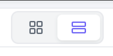
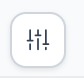

SECTION 04
對應來源：功能修改對照表 - 頂部按鈕與篩選列；權限對照表
4. 上方按鈕與搜尋篩選模塊
📍
模塊涵蓋範圍說明：
本章節專門規範會員管理介面最上方的「頂部功能快捷與批量按鈕區」以及下方雙排展開之「搜尋條件與進階篩選模塊」。
🖼️
介面對應區域截圖 (頂部快捷按鈕列與篩選搜尋區域)
對應介面區塊

🔍 點擊圖片可於新分頁展開檢視高解析度原始截圖
⚡第一部分：頂部功能快捷與批量按鈕
4.1 獨立快捷按鈕
「視圖模式切換」按鈕（頂部左側：巢狀 vs 列表）
位於頂部操作列最左側。提供操作員快速切換「巢狀樹狀模式」（點擊方格圖示）與「扁平列表模式」（點擊雙橫條圖示）。系統具備前端狀態持久化記憶，重新整理或重新登入時自動還原前次設定。

原型切換按鈕樣式「新增會員」按鈕
頂部右側主按鈕。連動『新增會員』權限（無權限時按鈕隱藏）。點擊滑出「新增會員一級抽屜」，可配置代理線、帳號類型、初始等級與密碼。
「資料驗證」按鈕
照舊。
4.2 批量操作收納選單
舊版橫向平鋪的 5 項批量按鈕統一收納至「批量操作 ▾」下拉選單。
💡
按鈕自適應隱藏規則： 操作員對 5 項批量功能全無授權時，主「批量操作」按鈕直接隱藏；若擁有部分授權，下拉清單內僅顯示受權子項。
4.3 批量操作業務流程與權限連動
| 批量功能項目 | 對應權限項 | 觸發條件與交互流程 |
|---|---|---|
| 批量更新用戶餘額 | 批量修改餘額 | 勾選會員 > 開啟抽屜 > 選擇「加款/扣款」> 輸入金額與備註 |
| 批量更新聯繫方式 | 批量更新聯繫方式 | 勾選會員 > 統一指派客服 WhatsApp/TG 分配標籤 |
| 批量更新用戶狀態 | 批量修改會員狀態 | 勾選會員 > 批次設為「正常 / 凍結 / 停權」 |
| 批量代理變更 | 批量轉移代理 | 勾選會員 > 輸入目標代理帳號 > 檢驗下級樹狀結構 |
| 批量更新最大提款次數 | 修改提款限額配置 | 勾選會員 > 統一重置當日最大提款次數上限 |
🔍第二部分：搜尋與篩選列模塊
🖼️
搜尋與篩選列介面對照截圖
篩選區域詳圖
🔍 點擊圖片可於新分頁展開檢視高解析度原始截圖
💡
模塊功能概述： 篩選列提供營運與客服人員透過多維度條件快速檢索會員資料的能力，支援精確搜尋、狀態過濾、各項進階查詢條件、動態標籤收摺以及極限狀態處理，以提升後台管理與營運效率。
4.4 篩選欄位字典與控制項規格
篩選列採用多維度彈性網格排版，依據業務查詢頻率與使用場景，共規劃 15 大篩選維度控制項。本表已全面整合「自訂篩選欄位清單（14 項）」與核心常駐控制項，並規範系統初始與重置時「默認全部勾選顯示」之業務需求：
💡
自訂篩選欄位整合與「默認全部勾選顯示」及極限狀態規範：
• 全維度預設開啟：項次 01 ~ 14 共 14 項可配製篩選維度，在系統初始載入或點擊「重置」時，規格要求全部默認勾選顯示（Default All Checked）於頂部篩選面板，使管理員初次進入即掌握最完整檢索條件。
• 自主精簡與狀態保存：管理員若需簡化畫面，可隨時點擊頂部自訂篩選按鈕開啟彈窗（詳見 4.8）自由取消勾選非必要條件，系統將自動透過
• 核心常駐必顯項：項次 15「帳號與身分複合檢索」為全局高頻核心中樞，強制常駐於頂部面板左側，不納入自訂彈窗勾選隱藏清單。
• 極限狀態顯示規範（超過 2 個選項加上數量）：當任一篩選字段選取或帶入超過 2 個選項時，介面控制項與動態標籤需自動折疊收納，僅顯示前 2 個選項並在後方標註數量（如：
• 全維度預設開啟：項次 01 ~ 14 共 14 項可配製篩選維度，在系統初始載入或點擊「重置」時，規格要求全部默認勾選顯示（Default All Checked）於頂部篩選面板，使管理員初次進入即掌握最完整檢索條件。
• 自主精簡與狀態保存：管理員若需簡化畫面，可隨時點擊頂部自訂篩選按鈕開啟彈窗（詳見 4.8）自由取消勾選非必要條件，系統將自動透過
LocalStorage 持久化儲存個人設定。• 核心常駐必顯項：項次 15「帳號與身分複合檢索」為全局高頻核心中樞，強制常駐於頂部面板左側，不納入自訂彈窗勾選隱藏清單。
• 極限狀態顯示規範（超過 2 個選項加上數量）：當任一篩選字段選取或帶入超過 2 個選項時，介面控制項與動態標籤需自動折疊收納，僅顯示前 2 個選項並在後方標註數量（如：
選項1, 選項2 +N 或 已選 N 項），避免多選撐破面板寬度。
| 序號 | 篩選欄位名稱 | 控制項類型 | 自訂篩選預設狀態 | 預設值 | 選項值 / 輸入佔位符 (Placeholder) | 極限狀態描述 |
|---|---|---|---|---|---|---|
| 01 | 帳號狀態 | 下拉選單 | ☑️ 預設勾選顯示 | 全部 | 全部、正常、凍結、停用 |
超過 2 個選項時折疊收納，顯示前 2 個選項並標註數量（例如：正常, 凍結 +1）。 |
| 02 | 用戶層級 | 下拉選單 | ☑️ 預設勾選顯示 | 全部 | 動態拉取後台已設定之用戶層級清單 | 超過 2 個層級選項時折疊收納，顯示前 2 項並附加數量（例如：層級A, 層級B +N）。 |
| 03 | 會員等級 | 下拉選單 | ☑️ 預設勾選顯示 | 請選擇 | VIP 成長體系等級清單 | 超過 2 個等級選項時折疊收納，顯示前 2 個等級並標註數量（例如：VIP1, VIP2 +N）。 |
| 04 | 主錢包幣種 | 下拉選單 | ☑️ 預設勾選顯示 | 全部 | 全部、RMB、VND、MYR、USDT 等 |
超過 2 個幣種選項時折疊收納，顯示前 2 個幣種並標註數量（例如：CNY, USDT +N）。 |
| 05 | 用戶標籤 | 下拉選單 | ☑️ 預設勾選顯示 | 請選擇 | 標籤字典選單（支援關鍵字快搜過濾標籤） | 超過 2 個標籤選項時折疊收納，顯示前 2 個標籤並標註數量（例如：標籤1, 標籤2 +N）。 |
| 06 | 排除條件 | 標籤移除式選單 | ☑️ 預設勾選顯示 | 測試账号 (預設帶入) |
測試账号、未充值账号 |
超過 2 個條件標籤時折疊收納，顯示前 2 個標籤並於右側附帶數量提示（例如：測試账号, 未充值账号 +N）。 |
| 07 | 生日月份 | 下拉選單 | ☑️ 預設勾選顯示 | 全部 | 全部、1月 ~ 12月 |
超過 2 個月份選項時折疊收納，顯示前 2 個月份並標註數量（例如：1月, 2月 +N）。 |
| 08 | 綁定銀行卡 | 單行文字輸入框 | ☑️ 預設勾選顯示 | (空值) | 请输入银行卡号 |
單一卡號輸入；超長卡號字串超出輸入框寬度時進行尾端截斷（...），支援懸停 Tooltip 顯示完整卡號。 |
| 09 | 未登入天數 (大於) | 數值輸入框 | ☑️ 預設勾選顯示 | (空值) | 请输入天数 (後綴單位：天) |
單一數值輸入；僅允許正整數，上限防護 99,999 天，輸入負數或非數字自動阻擋防呆。 |
| 10 | 代理 ID | 單行文字輸入框 | ☑️ 預設勾選顯示 | (空值) | 请输入代理Id |
單一 ID 精確輸入；超長字元自動截斷並支援 Tooltip 懸停檢視完整代理編號。 |
| 11 | VIP 會員等級 | 單行文字輸入框 | ☑️ 預設勾選顯示 | (空值) | 请输入VIP会员等级 |
單一代碼或文字輸入；超長字元自動截斷並支援 Tooltip 懸停顯示完整等級。 |
| 12 | 登入 IP | 單行文字輸入框 | ☑️ 預設勾選顯示 | (空值) | 请输入登录IP |
格式檢驗防護；失焦時即時校驗 IPv4 / IPv6 合法格式，超長或非法字元即時提示紅字警示。 |
| 13 | 存款金額大於 | 數值輸入框 | ☑️ 預設勾選顯示 | (空值) | 请输入金额 |
數值極大值防護（上限 999,999,999.99，支援兩位小數），超出上限自動限制並提示。 |
| 14 | 新增時間範圍 | 日期時間區間選擇器 | ☑️ 預設勾選顯示 | (空值 / 今日) | 年 / 月 / 日 -- : -- ~ 年 / 月 / 日 -- : -- |
跨度極限防護；查詢時間跨度超過 90 天時彈出效能提示，結束時間早於開始時間時自動防呆糾錯。 |
| 15 | 帳號與身分複合檢索 | 複合控制項 (下拉選單 + 動態輸入框) | 📌 核心常駐 (不可隱藏) | 模式：帳號 (精準匹配)(輸入框預設空值) |
預設：请输入精确账号(隨 15 項子選項即時動態切換，詳見 4.4.1) |
多帳號篩選模式下，若輸入/貼上超過 2 個帳號時自動折疊收納，顯示前 2 個帳號並標註數量（例如：user01, user02 (+N)，支援點擊展開完整列表彈窗）；超長單一關鍵字自動截斷並支援 Tooltip。 |
🔍 4.4.1 帳號與身份複合檢索選單 (15 項) 完整規格與動態佔位符字典
複合搜尋核心規範本控制項為營運與客服之高頻檢索中樞，整合帳號、各類身分標識、敏感通訊社群管道、運營備註及安全驗證。點擊左側選單切換時，右側輸入框自動清除前值並即時切換對應佔位符 (Placeholder)，部分涉及敏感個資與資安維度嚴格連動權限開關：
| 序號 | 下拉選單選項名稱 | 分類維度 | 輸入框動態佔位符 | 後台權限連動規則 |
|---|---|---|---|---|
| 01 | 帳號 (精準匹配) 預設 | 帳號檢索 | 请输入精确账号 |
無權限限制 |
| 02 | 帳號 (模糊匹配) | 帳號檢索 | 请输入模糊账号 |
無權限限制 |
| 03 | 帳號 (多账号筛选) | 帳號檢索 | 请输入多个账号(空格/逗号/换行分隔) |
無權限限制 |
| 04 | 快速登录账号 | 登入標識 | 请输入快速登录账号 |
無權限限制 |
| 05 | 用户ID | 系統唯一碼 | 请输入用户ID |
無權限限制 |
| 06 | 邀请码 | 推廣歸屬 | 请输入邀请码 |
無權限限制 |
| 07 | 用户昵称 | 身分資訊 | 请输入用户昵称 |
無權限限制 |
| 08 | 真实姓名 | 身分資訊 | 请输入真实姓名 |
無權限限制 |
| 09 | 邮箱 🔒 | 敏感個資 | 请输入邮箱 |
連動『查看會員聯絡信息』權限，勾選會顯示；無權限時選項自下拉清單剔除隱藏。 |
| 10 | 手机号 🔒 | 敏感個資 | 请输入手机号 |
連動『查看會員聯絡信息』權限，勾選會顯示；無權限時選項自下拉清單剔除隱藏。 |
| 11 | Zalo 🔒 | 敏感個資 | 请输入Zalo |
連動『查看會員聯絡信息』權限，勾選會顯示；無權限時選項自下拉清單剔除隱藏。 |
| 12 | WhatsApp 🔒 | 敏感個資 | 请输入WhatsApp |
連動『查看會員聯絡信息』權限，勾選會顯示；無權限時選項自下拉清單剔除隱藏。 |
| 13 | TG 🔒 | 敏感個資 | 请输入TG |
連動『查看會員聯絡信息』權限，勾選會顯示；無權限時選項自下拉清單剔除隱藏。 |
| 14 | 回访备注 | 營運維護 | 请输入回访备注 |
無權限限制 |
| 15 | 谷歌验证码 🔒 | 安全防護 | 请输入谷歌验证码 |
連動『会员谷歌验证码查看』權限，勾選會顯示；無權限時選項自下拉清單剔除隱藏。 |
4.5 操作按鈕、動態搜尋標籤與收摺互動
🔍 搜尋 (Search) 按鈕
點擊後觸發 API 請求，帶入所有已填寫或選取的篩選條件，重新載入會員列表並將分頁歸至第 1 頁。同時即時更新下方「已生效搜尋標籤列」。
🔄 重置 (Reset) 按鈕
點擊後清空所有輸入框、下拉選單還原為初始預設值、清除所有動態產生的搜尋標籤（排除條件還原為預設），並自動重新整理列表。

🎛️ 自訂篩選維度控制
點擊彈出「自訂篩選欄位」彈窗，用戶可勾選或隱藏次要篩選條件（例如：未登入天數、主錢包幣種、生日月份等）。收起未勾選維度以最大化表格可視空間（詳見下方 4.8 節）。
🏷️動態搜尋標籤 (Search Tags) 互動規範
- 標籤觸發機制：當使用者於篩選列填寫或選取條件後，點擊「搜尋」按鈕，系統會在篩選列下方即時動態生成對應的搜尋標籤（例如：
排除条件: 测试账号 ×、状态: 正常 ×）。 - 獨立標籤解除 (×)：每個產生的標籤右側均配有刪除（
×）圖示。點擊特定標籤的刪除按鈕時，該項篩選條件會被即時解除、表單對應欄位清空還原，且列表會自動連動更新。 - 一鍵清空所有標籤 (🗑️)：標籤列配置「清空圖示」，點擊後可一鍵移除所有生效標籤，等同於觸發重置行為。
📐畫面滾動與表單收摺互動 (Collapse on Scroll)
- 表單滾動收摺機制：當頁面往下滾動時，完整的「多欄位篩選表單」會自動向上平滑收起隱藏，僅保留「已生效的搜尋標籤列」與右側「展開/收起控制圖示」固定於畫面上方，以釋放更多檢視表格的垂直空間。
- 手動切換控制：使用者可隨時透過標籤列右側的收摺/展開圖示（
︿/﹀）手動切換進階篩選表單的顯示與隱藏。
4.6 特殊篩選條件規範與極限情境
🏷️ 用戶標籤精準搜尋
下拉選單支援標籤選擇，後端匹配邏輯僅支援精準搜尋。
💱 主錢包幣種加權過濾
支援彩票多幣種帳號過濾（CNY, USDT, VND, THB 等）。預設為「全部幣種」，選擇特定幣種後，列表財務匯總將自動加權該幣種。
🚫 排除條件整合
具備標籤移除式選單與快捷開關：
1. 排除測試帳號（預設啟用，排除白名單與內部測試帳號）
2. 排除未充值帳號（快速過濾無效幽靈用戶）
1. 排除測試帳號（預設啟用，排除白名單與內部測試帳號）
2. 排除未充值帳號（快速過濾無效幽靈用戶）
⚡極限情境處理機制 (Extreme Scenarios)
- 多條件標籤溢位處理：當使用者勾選或帶入過多篩選條件，導致產生的搜尋標籤數量超過單行顯示極限時，標籤列需支援自動換行顯示或橫向捲動（Scrollable / Wrapped），確保所有已生效的條件皆不會被遮擋而無法檢視或移除。
- 超長欄位內容與字串截斷：當輸入框文字過長或特定標籤文字超出版面時，前端自動進行文字截斷（Ellipsis
...），並支援滑鼠懸停 (Tooltip) 顯示完整內容。
4.7 篩選欄位之權限連動隱藏機制
🔒
隱私安全防線： 操作員未獲授權之數據權限，對應之篩選搜尋條件直接從篩選列隱藏，嚴防透過檢索反覆盲猜碰撞敏感個資。
| 篩選條件 / 下拉選項項目 | 舊版現況 | 改版後依賴之權限項目 | 權限判斷與前端表現 | 合規與業務說明 |
|---|---|---|---|---|
| 登錄 IP 篩選輸入框 | 無權限連動 | 修改會員 與 會員詳情 | 勾選具其一會顯示；兩者皆無權限時輸入框整列隱藏，不可按 IP 搜尋 | 風控核心維度，非審核與編輯角色不可探測同 IP 會員分佈。 |
| 複合檢索下拉選項： 『手機號，郵箱, zalo, WhatsApp, tg』 |
無權限連動 | 查看會員聯絡信息 | 勾選會顯示；無權限時，此 5 項通訊方式直接從複合下拉選單中剔除隱藏 | 極高安全等級：防範外部非授權人員或一般客服透過輸入號碼盲猜碰撞會員社群敏感個資。 |
| 複合檢索下拉選項： 『谷歌驗證碼』 |
無權限連動 | 会员谷歌验证码查看 | 勾選會顯示；無權限時，此選項直接從複合下拉選單中剔除隱藏 | 二維安全防禦核心，僅主管與授權技術人員配置，避免 2FA 狀態外洩。 |
| 生日月份篩選 | 無權限連動 | 查看會員生日 / 敏感個資 | 勾選會顯示；無權限時該篩選項直接隱藏，自訂維度中置灰禁選 | 保護個資隱私，避免非授權批次篩選當月壽星名單進行私下行銷。 |
| 綁定銀行卡號篩選 | 無權限連動 | 修改會員 或 會員詳情 | 勾選具其一會顯示；無權限時不提供銀行卡號篩選輸入框 | 金融防洗錢與銀行帳戶安全隔離，防止外部探測卡號綁定關聯。 |
4.8 自訂篩選欄位
📋1. 模組概述
「自訂篩選欄位」允許管理員根據日常維運習慣與檢索需求，自定義頂部篩選面板中顯示的搜尋條件欄位，隱藏不常用的篩選項目以保持介面清爽，提升資料查詢效率。
⚙️2. 介面佈局與互動元件
• 觸發入口：點擊頂部篩選區旁的自訂按鈕（圖二：三直槓調節器圖示按鈕 ）開啟「自訂篩選欄位」彈窗。
• 彈窗結構（圖一）：
- 標題與關閉：頂部標題「自訂篩選欄位」，右上角配置關閉圖示（
✕）。 - 選項列表：以多選框（Checkbox）列表形式垂直呈現所有 14 項可用的篩選條件。
- 底部操作按鈕：右下角配置
[取消]與[確認]按鈕。
☑️3. 可勾選之篩選欄位清單規格（已整合至 4.4 字典大表）
默認全部勾選顯示 (Default All Checked)
為提升規格維護一致性與閱讀效率，14 項可勾選篩選維度之完整控制項類型、預設值、佔位符、輸入校驗與維運說明已全面整合至 4.4 篩選欄位字典與控制項規格。
📌 4.8 核心業務與「默認全部勾選顯示」規範：
- 默認全部勾選顯示：系統初始載入或點擊「重置」時，彈窗內全部 14 項篩選欄位（帳號狀態、用戶層級、會員等級、主錢包幣種、用戶標籤、排除條件、生日月份、綁定銀行卡、未登入天數、代理 ID、VIP 會員等級、登入 IP、存款金額大於、新增時間範圍）預設狀態皆為勾選（☑）並在頂部篩選面板完整顯示。
- 自主精簡與持久記憶：管理員可隨時透過本彈窗取消勾選不常用欄位，點擊 [確認] 後即時自頂部面板隱藏，並由前端
LocalStorage持久化儲存個人自訂偏好。 - 核心常駐必顯控制項：第 15 項「帳號與身分複合檢索」為核心檢索中樞，不納入自訂勾選列表，強制常駐必顯。
⚡4. 核心互動功能需求
4.1 顯示與隱藏切換
互動行為：
• 每個篩選條件左側皆配有勾選框（Checkbox）。
• 勾選（☑）：該篩選欄位即時或確認後呈現在頂部篩選面板中。
• 取消勾選（☐）：該篩選欄位從頂部篩選面板中隱藏。
互動行為：
• 每個篩選條件左側皆配有勾選框（Checkbox）。
• 勾選（☑）：該篩選欄位即時或確認後呈現在頂部篩選面板中。
• 取消勾選（☐）：該篩選欄位從頂部篩選面板中隱藏。
4.2 確認與儲存
互動行為：
• 點擊 [確認]：系統儲存當前管理員的勾選偏好（透過前端
• 點擊 [取消] 或右上角 ✕：放棄本次變更，關閉彈窗，篩選面板保持原樣不變。
互動行為：
• 點擊 [確認]：系統儲存當前管理員的勾選偏好（透過前端
LocalStorage 持久化儲存），關閉彈窗，並即時動態刷新頂部篩選面板的佈局。• 點擊 [取消] 或右上角 ✕：放棄本次變更，關閉彈窗，篩選面板保持原樣不變。